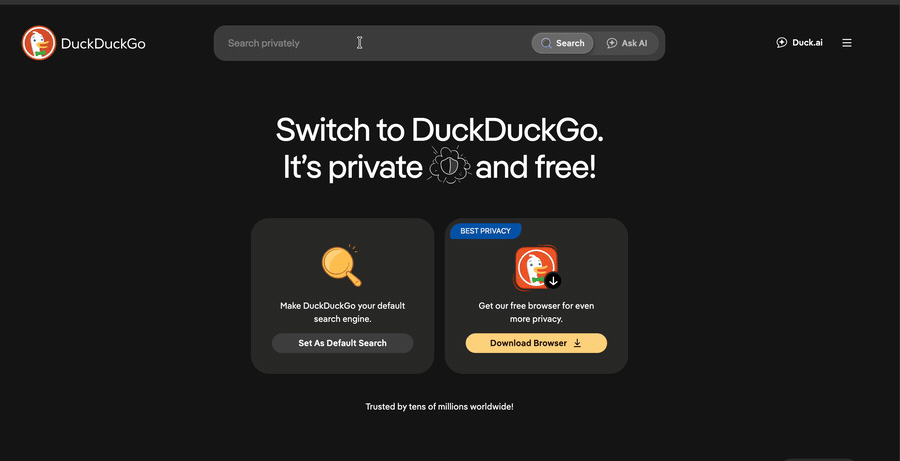
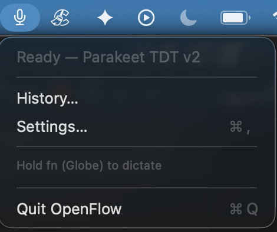
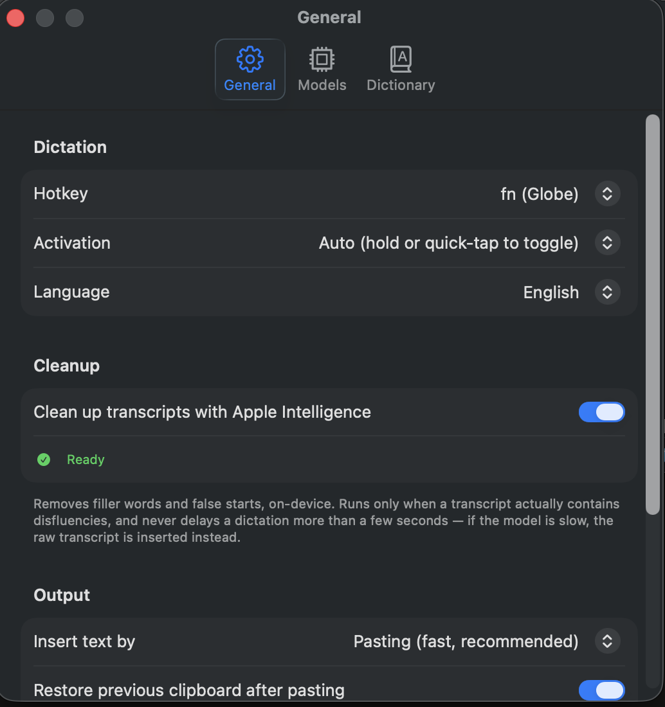
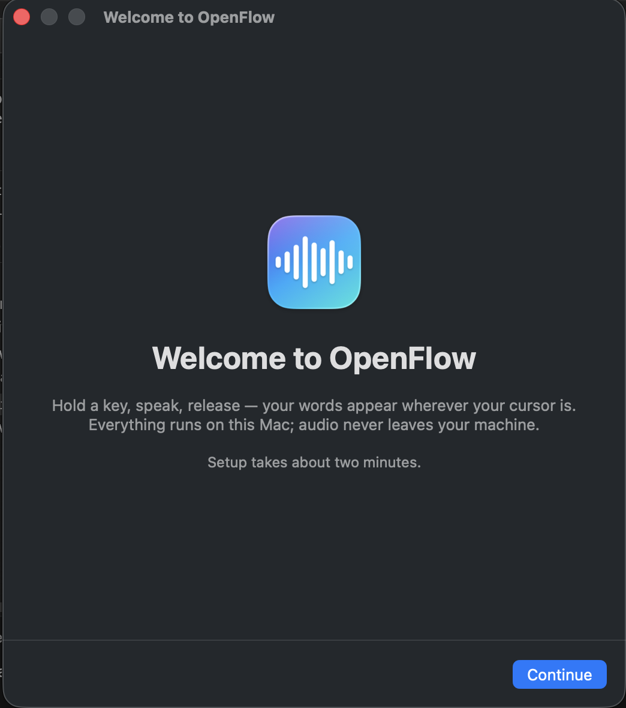

Talk. Your Mac types.
OpenFlow turns speech into text anywhere on macOS. Hold a key, talk, release, and your words land right where your cursor is. Everything runs on device, so your voice never leaves your machine.

$15 a month to talk to your computer? OpenFlow is free, and it never sends your voice anywhere.
Private by design
Audio is transcribed on device and discarded immediately. No cloud, no account, no telemetry.
Genuinely instant
NVIDIA's Parakeet model transcribes at 35× realtime on Apple Silicon. It even spells kubectl right.
Yours to keep
Open source under the MIT license. No subscription, no upsell. Fork it, read it, make it yours.
Everything you need to stop typing.
Two on-device speech engines, an optional cleanup pass, and the small touches that make dictation feel effortless.
Parakeet for speed, Whisper for the world.
Start with Parakeet TDT v2, the fastest and most accurate English model. Switch to Whisper for multilingual dictation. Both download once and run entirely on your Mac.
Apple Intelligence removes the "ums".
An optional pass strips filler words, stutters, and false starts, and fixes punctuation. It runs only when a transcript actually needs it, so most dictations stay instant.
↓
Send the report to Sarah.
Teach it your words.
Names, jargon, and commands, spelled your way.
Any app, any field.
Editors, browsers, chat, terminals. If you can type into it, you can talk into it.
Hold or toggle.
Hold fn and release, or quick-tap to go hands-free. Esc cancels. Searchable history, all on disk.
Three keystrokes to fluent.
No windows to manage, no buttons to find. It lives in your menu bar and waits for the key.
Hold the key
Press and hold fn (or any hotkey you pick). A quiet tone tells you the mic is live.
Say it
Talk naturally. A floating meter shows OpenFlow is listening, without stealing focus from your work.
Release
Let go. Your words are transcribed on device and dropped in at the cursor, clean and punctuated.
Nothing leaves your Mac.
Transcription runs locally with models you download once. The audio is discarded the instant it becomes text.
- Audio is processed locally and discardedThe recording never touches a disk or a network.
- No account, no sign-in, no telemetryDownload and use. There is nothing to log into.
- Works fully offlineOnce the model is downloaded, unplug the internet. It still works.
- Open source, so you can checkEvery line is on GitHub under the MIT license.

Native to the Mac, down to the details.
Built in Swift as a proper menu-bar app. Pick your engine, your hotkey, and your language.


Ready to talk instead of type?
Free, open source, and running on your Mac in about two minutes.
Requires Apple Silicon and macOS 14 or later. This build isn't notarized by Apple yet, so on first launch, right-click the app and choose Open. Model download is about 600 MB, one time.